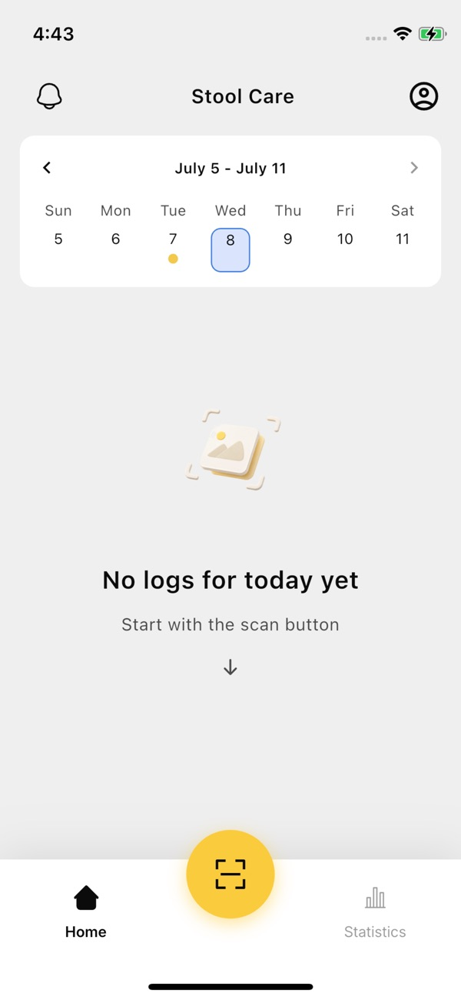
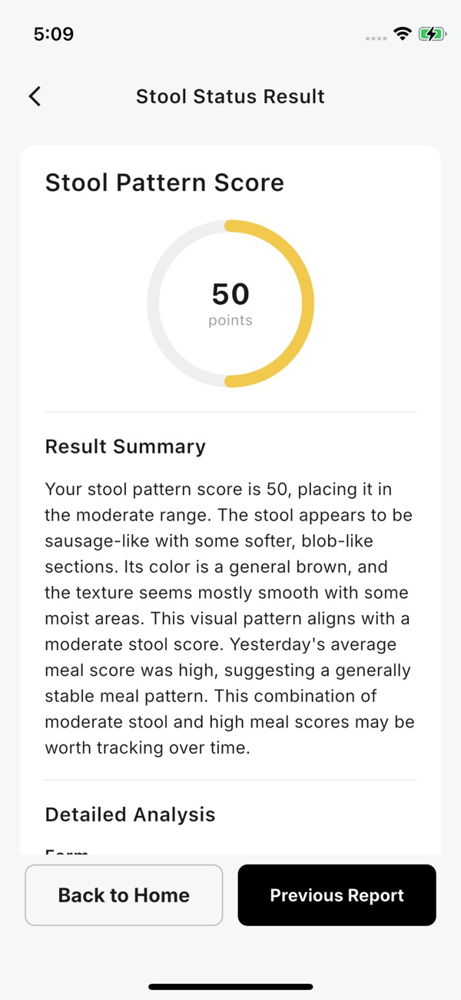
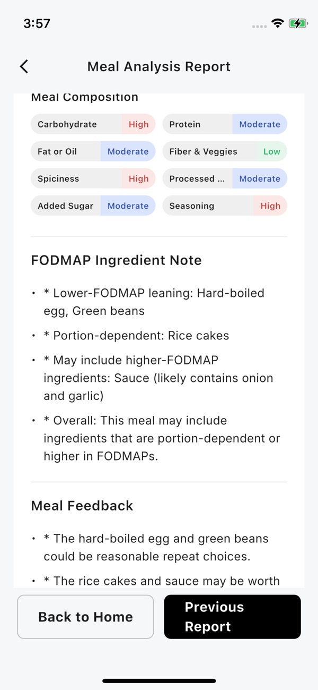

01 배경과 목표 CONTEXT
스툴케어는 식단과 대변 패턴을 사진으로 기록하는 건강 생활 기록 앱입니다. 사진을 한 장 찍으면 AI가 분석해서, 대변은 점수와 형태·색·질감 설명으로, 식단은 영양 구성과 성분 노트로 정리해 줍니다.
배변 상태는 날마다 다르지만 글로 적어 두기는 번거롭고, 무엇을 먹은 날 어땠는지는 금방 잊힙니다. 스툴케어는 두 기록을 같은 달력에 쌓아 두고, 주간·월간 통계로 내 기록이 어떻게 달라지는지 직접 살펴볼 수 있게 합니다. 일반적인 건강 관리와 생활 기록을 위한 앱이며 의학적 진단은 하지 않습니다. Free·Lite·Premium 구독 플랜으로 운영합니다.
제가 맡은 일은 촬영·기록·조회부터 구독 결제까지 이어지는 흐름을 완성해 출시하고, 출시 뒤에도 안정적으로 운영하는 것이었습니다. 회사에는 인앱 결제를 만들어 본 경험이 없었습니다. 팀원이 만든 첫 앱 위에 사진 업로드·분석 연결과 인앱 결제를 붙였고, 한국·미국 서버 배포와 운영도 맡았습니다. 사진 분석 모델은 알고리즘 팀원이, 화면 디자인은 디자인 팀이 만들었습니다.
출시된 앱 화면
App Store 제품 페이지에 공개된 스크린샷입니다. 홈의 주간 기록, 대변 분석 결과, 식단 분석 결과 화면입니다.



화면 디자인은 디자인 팀이 했고, 저는 앱·백엔드 구현과 요구사항 조율을 맡았습니다.
02 구조 ARCHITECTURE
결제는 앱에서 ‘구독 · 스캔 한도’를 거쳐 PostgreSQL에 저장되고, 스토어 알림은 ‘스토어 웹훅’을 거쳐 같은 구독 기록을 갱신합니다. 사진은 ‘사진 업로드’, Cloud Storage, ‘분석 API’, Vision 서버와 설명 에이전트 순서로 처리됩니다. 아래 예시에서 사진 분석, iOS 구독 검증, Apple 환불 알림이 각각 어떤 상자를 지나는지 볼 수 있습니다.
03 결과 RESULT
가능해진 것 스툴케어를 출시했고, 지금은 미국·한국 포함 7개국에 배포 중입니다. 구독 결제와 갱신·해지·환불을 서버가 처리하고, 지금도 운영하며 기능을 더하고 있습니다.
04 확인 자료 EVIDENCE
- 기술
- Flutter · Dart · NestJS · PostgreSQL
- 테스트 기록
- 2026.10.15 API Jest 검증 기록
- 화면 자료
- 위 화면은 App Store 제품 페이지에 공개된 스크린샷입니다.